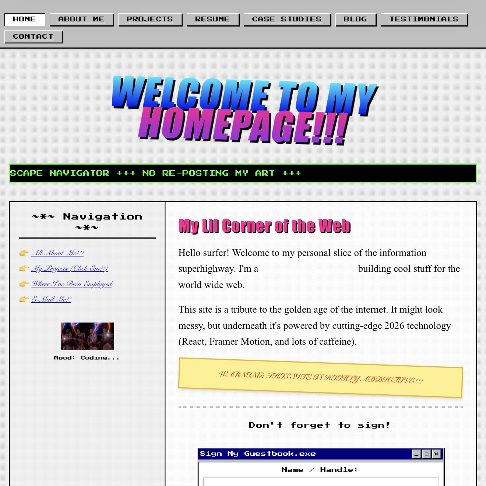

Y2K WebRetro & Gaming
Y2K Web
A glossy Y2K homepage with compact browser-era content blocks, bright interface accents, and turn-of-the-millennium energy.
At a glance
About This Theme
A glossy Y2K homepage with compact browser-era content blocks, bright interface accents, and turn-of-the-millennium energy.
- Category
- Retro & Gaming
- Format
- Standalone static website
- Hosting
- GitHub Pages
Design details
Theme Highlights
- Distinct visual identity designed around the theme concept
- Responsive static presentation for GitHub Pages
- Dedicated live demo and standalone repository
- Portfolio-ready structure for projects, skills, and experience
View the project
Explore the Theme
Open the finished website or review the complete source files.